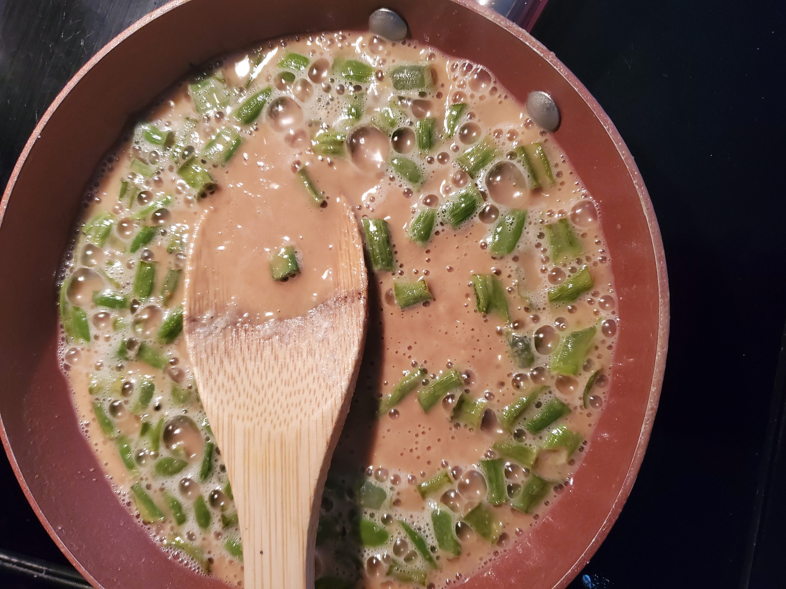

My Bad Ass Louisiana Gumbo!
This awesome dish takes a bit of prep time but is so worth it. This is a popular Louisiana recipe I tweaked the hell out of. And I can because I'm from there. Damnit.
All RecipesIngredients
- 1 cup vegetable oil
- 1 cup white flour
- 1/2 cup chopped fresh green onion
- 3 garlic cloves minced
- 2 bay leaves
- 2 tsp old bay seasoning
- 3 tsp Worcestershire sauce
- 2 tsp Kosher salt
- 1 tbsp onion pepper
- kosher salt
- 1 tbsp cayenne pepper
- 1 pound shrimp (peeled de-veined)
- 1 package boudin sausage
- 3 large chicken breasts
- 1 bag Louisiana crawfish tails
- 1/2 pound small gold potatoes
- large box chicken broth

Instructions
- Cut sausage into 1/4 inch pieces and brown in skillet
- shred chicken breasts and fully cook in skillet with vegetable oil
- Quarter the potatoes, add them to crockpot and turn on slow cooker setting with the entire box of chicken broth
- Add the shrimp, tails, cooked chicken and sausage to the pot
The Roux!
This is very important and must be stirred constantly until it reaches this caramel color. Once it looks like the photo below, it is ready to add to the pot

Instructions for the Roux
- heat oil in medium skillet over med/low heat for five minutes
- add flour gradually and stir it in
- add chopped green onion and continue to stir until a rich caramel color is achieved
- add the roux to the crockpot and stir
- add the Worcestershire sauce and all spices to the pot while stirring.
*Feel free to add or subtract the suggested amounts. Mine are never exact.
For best results cook in the crockpot for at LEAST 2 hours on slow cooker-high setting.
The longer it is cooked the more tender the meat will be.
Serve with french bread and rice
The next day the left overs will be MUCH spicier.